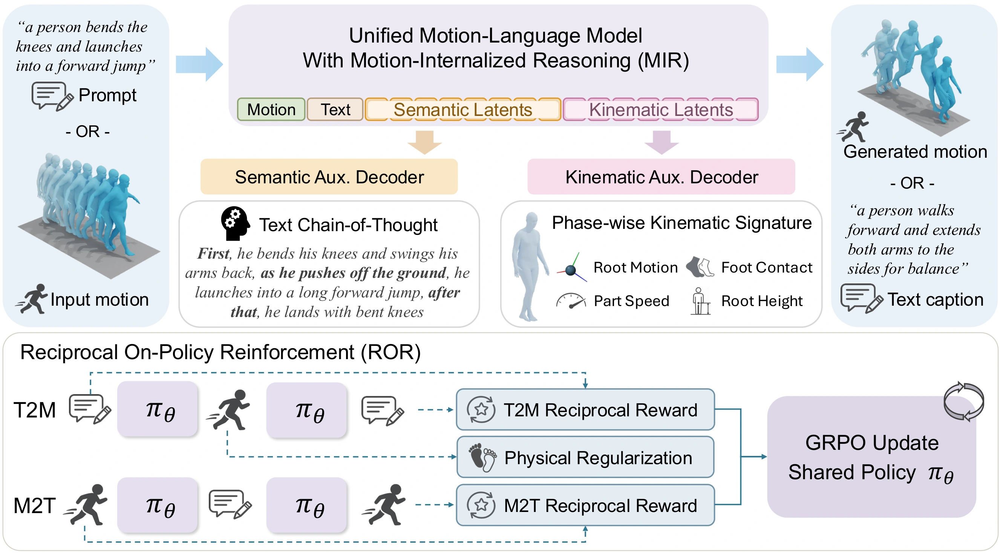
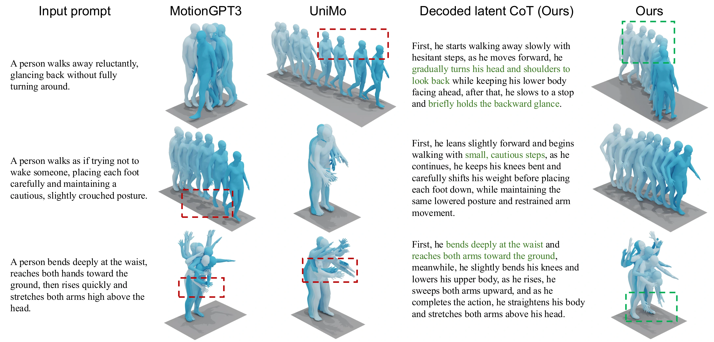
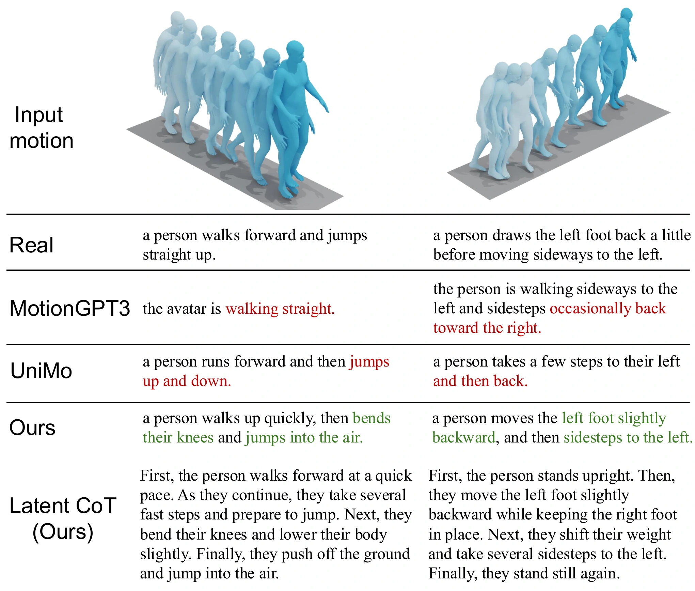

“A person walks away reluctantly, glancing back without fully turning around.”
Video unavailable. Open video
Video unavailable. Open video
Video unavailable. Open video
Motion-Internalized Reasoning with Reciprocal On-Policy Reinforcement for Unified Motion Generation and Understanding
1Nanyang Technological University2HKUST (Guangzhou)3Alibaba Group
MIRROR generates human motion from a text description.
“A person walks away reluctantly, glancing back without fully turning around.”
“A person bends deeply at the waist, reaches both hands toward the ground, then rises quickly and stretches both arms high above the head”
“A person walks as if trying not to wake someone, placing each foot carefully and maintaining a cautious, slightly crouched posture.”
“A person dances with alternating side steps,”
“A person holds both hands in a fighting stance, steps back to the left, then kicks with the left leg.”
“A person swims forward, sweeping their arms through the water.”
“A person steps sideways for three times”
“A person takes several steps backward while keeping their torso oriented toward the same direction.”
“A person balances on one leg, and carefully returns to a neutral stance.”
“A person appears trapped between moving forward and turning back, alternating between both intentions”
“A person runs forward, suddenly stops, turn to the side”
“A person jumps sideways with both feet, lands with bent knees”
“A person walks forward and extends the arms to his sides”
“A person crouches low, strides forward, and springs upward”
“A person swings both arms behind the body, bends the knees, and launches into a long forward jump”
“A person performs jumping jacks rapidly.”
“A person swings the right arm in large circles, then reverses direction and continues.”
“A person plants both feet wide apart, throws strong punches forward in a guarded stance.”
“A person leans sideways to avoid an imagined strike”
“A person runs, raises both arms while jumping, then walks forward.”
“A person skips forward with large alternating steps, swings both arms freely.”
“A person balances on one leg, holding the other leg and extending one arm forward.”
“A person performs wide cartwheel-like sideways motions with the torso.”
“A person winds up the right arm, throws an imagined ball far forward, and watches its path while leaning ahead”
“A person kicks an imaginary ball forcefully, then steps backward.”
“A person walks down the stairs carefully.”
MIRROR describes an input motion in natural language.
“a person walks up quickly, then bends their knees and jumps into the air.”
“a person moves the left foot slightly backward, and then sidesteps to the left.”
“a person raises both arms above their head, then twist his upper body to the right, then returns and lowers both arms.”
“a person is playing basketball, fakes ball and dribbles forward.”
“a person is swimming in water.”
“a person walks up stairs, turns around, and walks back down stairs.”
“A person punches with right hand for a couple of times.”
“a person walks forward a few steps and then turns around and walks back.”
“a person crouches down on the ground and then lays flat on their stomach”
Motion generated by three models from the same text description.
“A person walks away reluctantly, glancing back without fully turning around.”
“A person walks as if trying not to wake someone, placing each foot carefully and maintaining a cautious, slightly crouched posture.”
“A person bends deeply at the waist, reaches both hands toward the ground, then rises quickly and stretches both arms high above the head”
“A person holds both hands in a fighting stance, steps back to the left, then kicks with the left leg.”
“A person dances with alternating side steps,”
Unified motion generation and understanding models jointly address text-to-motion generation and motion-to-text understanding. However, existing methods rely on explicit textual Chain-of-Thought (CoT) reasoning and task-specific reinforcement learning. Explicit CoT overlooks fine-grained kinematics and adds autoregressive overhead, while independent rewards limit cross-task feedback. We propose MIRROR, combining Motion-Internalized Reasoning (MIR) and Reciprocal On-Policy Reinforcement (ROR). MIR learns semantic and kinematic latent reasoning states that implicitly encode textual reasoning and phase-wise motion signatures, enabling reasoning entirely during prompt prefill. ROR couples both tasks through reciprocal on-policy cycles, allowing generation and understanding to improve each other during training. Extensive experiments show that MIRROR achieves state-of-the-art performance among unified models in both motion generation and understanding.
A shared model learns to generate and understand motion through latent reasoning and reciprocal training.
Semantic and kinematic latents capture action intent and phase-wise body dynamics. Reasoning happens during prompt prefill, avoiding intermediate text decoding at inference.
Generation and understanding improve each other through text–motion–text and motion–text–motion training cycles. The reverse task evaluates whether an output preserves the original information.

Latent prefill replaces autoregressive Chain-of-Thought decoding.
Average end-to-end latency per sample on HumanML3D:
faster than explicit CoT
faster than explicit CoT
Explicit CoT baseline: UniMo — Unified Motion Generation and Understanding with Chain of Thought.
Generation and understanding results on HumanML3D.
relative improvement over MotionGPT3
relative improvement over UniMo
relative improvement over UniMo
| Method | R-Precision Top 1 ↑ | R-Precision Top 2 ↑ | R-Precision Top 3 ↑ | FID ↓ | MM-Dist ↓ | Diversity → | Multimodality ↑ |
|---|---|---|---|---|---|---|---|
| Reference | |||||||
| Real | 0.511±0.003 | 0.703±0.003 | 0.797±0.002 | 0.002±0.000 | 2.974±0.008 | 9.503±0.065 | -- |
| Generation only | |||||||
| MDM | 0.320±0.005 | 0.498±0.004 | 0.611±0.007 | 0.544±0.044 | 5.566±0.027 | 9.559±0.086 | 2.799±0.072 |
| T2M-GPT | 0.491±0.003 | 0.680±0.003 | 0.775±0.002 | 0.116±0.004 | 3.118±0.011 | 9.761±0.081 | 1.856±0.011 |
| MoMask | 0.521±0.002 | 0.713±0.002 | 0.807±0.002 | 0.045±0.002 | 2.958±0.008 | 9.620±0.064 | 1.241±0.040 |
| MoMask++ | 0.528±0.003 | 0.718±0.003 | 0.811±0.002 | 0.072±0.003 | 2.912±0.008 | -- | 1.227±0.046 |
| Motion-R1 | 0.515±0.003 | 0.719±0.002 | 0.818±0.002 | 0.201±0.004 | 2.854±0.010 | 10.026±0.075 | 2.317±0.105 |
| MotionHiFlow | 0.563±0.003 | 0.754±0.003 | 0.843±0.003 | 0.032±0.002 | 2.691±0.009 | 9.504±0.071 | -- |
| Unified | |||||||
| TM2T | 0.424±0.003 | 0.618±0.003 | 0.729±0.002 | 1.501±0.017 | 3.467±0.011 | 8.589±0.076 | 2.424±0.093 |
| MotionGPT | 0.492±0.003 | 0.681±0.003 | 0.778±0.002 | 0.232±0.008 | 3.096±0.008 | 9.528±0.071 | 2.008±0.084 |
| MotionChain | 0.504±0.003 | 0.695±0.003 | 0.790±0.003 | 0.248±0.009 | 3.033±0.010 | 9.470±0.075 | 1.715±0.066 |
| MotionLLM | 0.515±0.004 | 0.691±0.003 | 0.801±0.004 | 0.230±0.009 | 2.967±0.020 | 9.908±0.102 | 2.142±0.014 |
| MotionGPT-2 | 0.496±0.002 | 0.691±0.003 | 0.782±0.004 | 0.191±0.004 | 3.080±0.013 | 9.860±0.026 | 2.137±0.022 |
| MotionGPT3 | 0.553±0.003 | 0.747±0.002 | 0.837±0.003 | 0.208±0.006 | 2.725±0.008 | 9.700±0.096 | 1.018±0.038 |
| UniMo | 0.539±0.003 | 0.738±0.002 | 0.831±0.002 | 0.177±0.004 | 2.768±0.010 | 10.042±0.076 | 1.924±0.080 |
| IRG-MotionLLM | 0.535±0.002 | 0.725±0.002 | 0.820±0.002 | 0.242±0.006 | 2.785±0.006 | 9.900±0.094 | -- |
| MIRROR (SFT only) | 0.495±0.003 | 0.674±0.003 | 0.775±0.002 | 0.163±0.005 | 3.085±0.007 | 9.719±0.066 | 2.117±0.072 |
| MIRROR | 0.577±0.004 | 0.762±0.003 | 0.852±0.002 | 0.188±0.003 | 2.672±0.006 | 9.777±0.072 | 2.350±0.083 |
| Method | BLEU@1 ↑ | BLEU@4 ↑ | ROUGE-L ↑ | CIDEr ↑ | BERTScore ↑ |
|---|---|---|---|---|---|
| Understanding only | |||||
| LaMP-M2T | 47.8 | 13.04 | 37.1 | 28.9 | 32.7 |
| ToHL | 49.7 | 13.62 | 39.2 | 53.1 | 33.1 |
| HiCAM2T | 61.8 | 22.4 | 47.0 | 44.8 | -- |
| SMD | 63.45 | 22.67 | 47.80 | -- | 45.58 |
| Unified | |||||
| TM2T | 48.9 | 7.00 | 38.1 | 16.8 | 32.2 |
| MotionGPT | 48.2 | 12.47 | 37.4 | 29.2 | 32.4 |
| MotionChain | 48.1 | 12.56 | 39.9 | 33.7 | 36.9 |
| MotionLLM | 54.53 | 17.65 | 48.7 | 33.74 | 42.63 |
| MotionGPT-2 | 48.7 | 13.8 | 37.6 | 29.8 | 32.6 |
| MotionGPT3 | 59.08 | 19.41 | 46.17 | 28.72 | 35.23 |
| UniMo | 63.10 | 19.74 | 48.8 | 46.69 | 54.26 |
| IRG-MotionLLM | 62.05 | 22.53 | 47.51 | 52.4 | 42.68 |
| MIRROR (SFT only) | 60.34 | 18.85 | 47.96 | 44.62 | 53.71 |
| MIRROR | 68.77 | 26.20 | 54.23 | 58.82 | 59.71 |
Standard HumanML3D split. T2M: 20 runs with 95% confidence intervals. M2T: original ground-truth captions without lemmatization or additional text normalization. Bold denotes the best result within each method category; diversity is compared with the real-motion reference.

